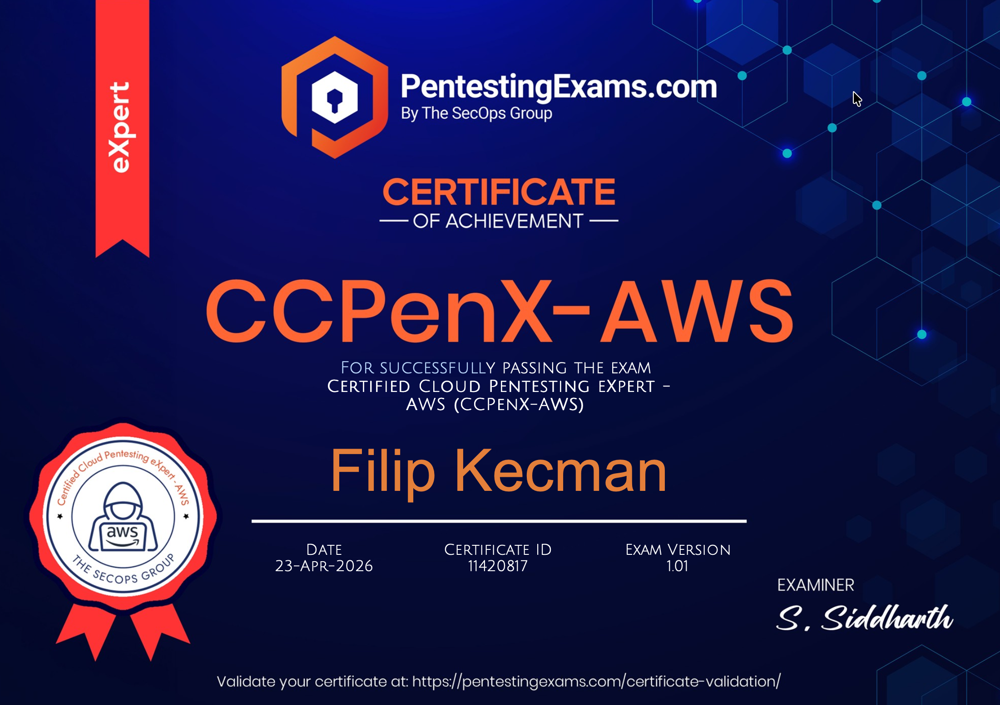

I recently sat for The SecOps Group's Certified Cloud Pentesting eXpert for AWS (CCPenX-AWS) and passed on the first try. I had been meaning to formalise my AWS offensive security knowledge for a while, and this exam looked like the right shape. It's a practical CTF rather than a multiple choice quiz, and the scope is focused enough that you can prepare for it without months of study.

Now let's get into the preparation and the exam itself.
As with any commercial exam, I am not allowed to leak any content or solutions, and I won't. What I can share is the path I took to get ready, how the exam day went for me, and what I wish I had known going in.
The Training
The CCPenX-AWS is focused on AWS as a platform. It's not a general pentesting exam. You will not need to pop a Windows box or write shellcode. It does assume that you already have solid web application pentesting experience.
The vendor's own page is pretty open about the areas that are in scope: enumeration across services like DNS, S3, EC2, VPC, IAM, CloudFront, EBS, EKS and Route 53, identity and access management, exploitation and lateral movement, and security hardening. That's a useful public checklist, but it is also quite wide, so let me share how I actually prepared.
The officially recommended prerequisites are around 5 years of professional pentesting experience and at least 12 months of cloud security experience. I think that is about right. If you are very early in your career, this is probably not the first exam I would aim for.
If I had to point at the areas you should be comfortable with before booking, it really comes down to a few broad buckets.
AWS IAM at a practical level
You should be able to reason about how AWS decides who is allowed to do what. If permissions, identities, and roles feel intuitive to you, you're in a good place.
AWS CLI fluency
You will live in your terminal for the whole exam, so mechanics matter. Being comfortable switching contexts and piping output around will save you a lot of time.
General familiarity with core AWS services
Enough that when you land in front of any common service, you know what questions to ask and where to look. You don't need to be an expert in everything. You need to not freeze when you see it.
Solid web application pentesting fundamentals
The exam assumes this, and a meaningful part of the path relies on it. If web pentesting is still new to you, I would start there before booking a cloud focused exam.
Resources
For resources I'd recommend:
- HackTricks Cloud and Hacking The Cloud for general reading. If you only read two sources before the exam, read these.
- CloudGoat by Rhino Security Labs. Hands on, vulnerable AWS scenarios you spin up in your own account. Work through every scenario at least once.
- Pacu. Not necessarily because you'll use it during the exam, but because reading its modules teaches you what cloud enumeration actually looks like.
- AWS's own documentation, especially the IAM policy evaluation logic. Dry, but authoritative.
A lot of what I leaned on during the exam came from real world engagements. If you can do cloud work day to day before booking this exam, do it. There is no substitute for debugging a real IAM policy at 2 AM.
The Exam
Let's dive in to the exam.
The CCPenX-AWS is a 7.5 hour exam, delivered online and on demand. You connect to the exam environment over a VPN and work through a set of targets. The pass threshold is over 60%, and above 75% you get a merit on the certificate. There is also one free retake included with the exam fees, which takes a bit of pressure off the first attempt. One thing worth flagging for 2026: AI tools are not allowed during the exam, which in itself is a kind of useful constraint to train under, since you are forced to actually know what you are doing instead of prompting your way through it.
Unlike a 10 day exam where you can sleep on a problem, here the clock is loud. I worked intensely for about five hours of the 7.5, finished with a bit over two hours to spare, and didn't take a proper meal break. If you intend to sit for this, clear your schedule, warn everyone in your life, and be in front of the screen from the first minute.
I passed with a couple of flags unsolved, more on that in a second.
Mindset and Tips
The thing I kept getting punished for during the exam was over thinking.
Cloud pentesting has a specific trap. Because there are many services and the possible chains feel infinite, you can convince yourself that the answer must be some elaborate multi step pivot when in reality it's a small piece of information you already have but didn't notice. Twice during the exam I spent a long time building a sophisticated attack that was never going to work, when the intended path was visible early if I had read my own output more carefully.
A few things I wish I had forced myself to do:
- Re read every response slowly before doing anything clever. The answer is often in the boring part of the output.
- Write down what credentials you have and what each one can do. The exam is a graph, and losing track of nodes is how you waste time.
- Pace yourself. The time feels long at hour one and very short at hour six. Stand up every hour, drink water, don't tunnel vision on a single flag.
- If something doesn't work after 20 or 30 minutes, mark it and move on. You can come back later once you've made progress elsewhere.
The flags I didn't get, I lost them to this exact tunnel vision pattern. I convinced myself the intended attack was one specific class of bug and never seriously questioned whether a completely different piece of context I already had would have opened the door. A proper credentials inventory on the side would have caught this earlier.
What Actually Helped
The single thing that carried me through was fluency with the AWS CLI. Not memorising commands, nobody memorises every command by heart, but being comfortable enough that I could switch profiles, pipe into jq, and decode a JWT in my terminal without losing flow. Every chain comes back to the CLI, and every second you save on mechanics is a second you can spend thinking.
The second thing is being honest about what each piece of information means. Early on I had a bad habit of grabbing data and moving on, instead of stopping to ask what this specific field is telling me about the next step. Role ARNs, account IDs, region strings, and JWT claims are all free hints, and the exam rewards people who mine every output for everything it contains.
Finally, take the reporting side seriously. Even though this is a flag submission exam and you don't hand in a report, writing one afterwards as if it were a real engagement is the single best way to lock in what you learned. I did that the day after passing and it turned a "nice, I got the flags" into "now I actually understand why each attack worked".
Final Thoughts
The CCPenX-AWS is the best AWS focused offensive exam I've come across so far. It is practical end to end. No memorisation, no trick questions, just build a chain and find a flag. The base price is £400, and at the time of writing there is a 75% off code (75-OFF) that brings it down to £100, which is a genuine bargain for what you get.
If you're a web pentester or an AppSec engineer wanting to move sideways into cloud, this is a natural bridge. The web bugs you already know are still there, they just have AWS service consequences when you succeed. If you're already a cloud engineer and you want to validate the security side of your knowledge, this will stretch you in the right places.
I feel noticeably more confident walking into a cloud engagement now, which is the whole point of doing certifications in the first place.
Stay tuned for more exam reviews and random hacking posts.
Follow me on LinkedIn to stay updated.
Happy hacking!